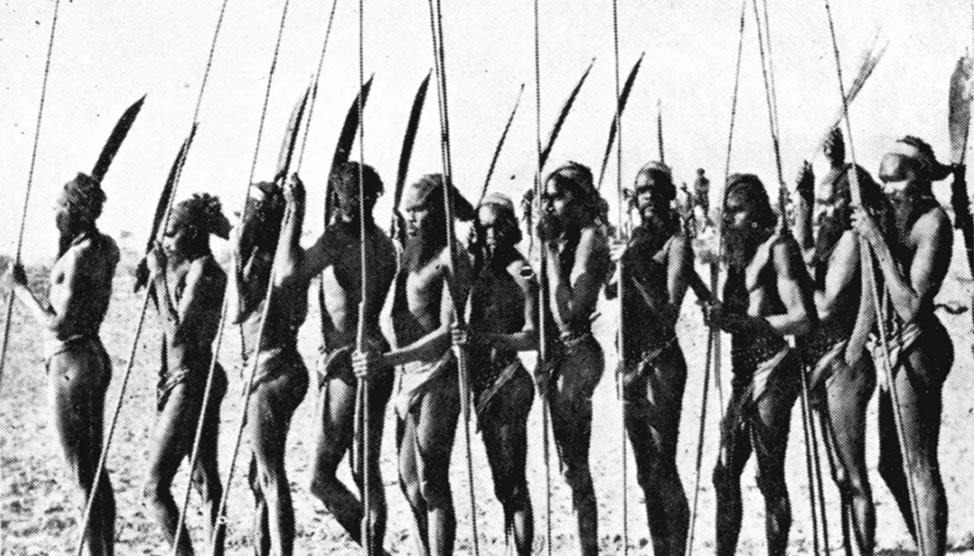

Aboriginal Australians
From Wikipedia, the free encyclopedia

Contents
- Legal and administrative definitions
- Definitions from Aboriginal Australians
- Definitions from academia
- Origins
- Groups of Aboriginal Australians
- Names used by Australian Aboriginal people
Legal and administrative definitions
The category "Aboriginal Australians" was coined by the British after they began colonising Australia in 1788, to refer collectively to all people they found already inhabiting the continent, and later to the descendants of any of those people. Until the 1980s, the sole legal and administrative criterion for inclusion in this category was race.
"In the era of colonial and post-colonial government, access to basic human rights depended upon your race. If you were a "full blooded Aboriginal native ... [or] any person apparently having an admixture of Aboriginal blood", a half-caste being the "offspring of an Aboriginal mother and other than Aboriginal father" (but not of an Aboriginal father and other than Aboriginal mother), a "quadroon", or had a "strain" of Aboriginal blood you were forced to live on Reserves or Missions, work for rations, given minimal education, and needed governmental approval to marry, visit relatives or use electrical appliances."